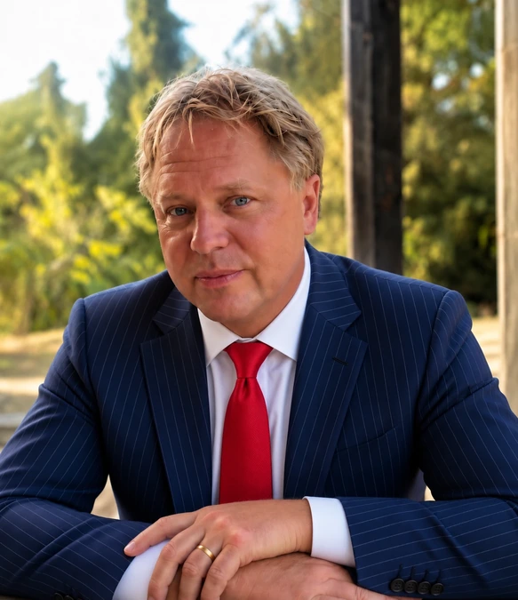
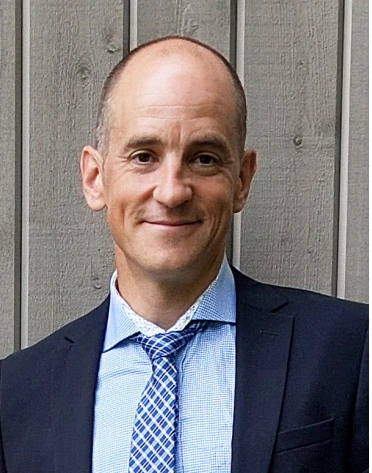

Babylon Capital AB
Babylon Capital AB etablerades i sin nuvarande form 2026 som ett svenskt ägarbolag för långsiktig kapitalförvaltning. Bolaget samlar investerare i en gemensam struktur där kapitalet förvaltas för bolagets egen räkning.
I den första kapitalanskaffningen tecknades aktier till kursen 10 kronor. Bolagets utveckling redovisas löpande genom aktiekurs, investerarbrev och investerarmöten.

Henrik Hallenborg
Henrik Hallenborg ansvarar för Babylon Capital AB:s kapitalförvaltning och kapitalallokering och har själv investerat kapital i bolaget. Han är även verksam som Commodity Trading Advisor genom Hallenborg CTA, med fokus på systematisk och trendföljande handel.
Hallenborg CTA registrerades som Commodity Trading Advisor 2012. Verksamheten är medlem i National Futures Association och står under Commodity Futures Trading Commissions regelverk.
Med rötter i finansmarknaderna sedan mitten av 1990-talet och aktiv handel sedan 1997 har erfarenheten formats genom flera marknadscykler – från IT-bubblan och finanskrisen till nollräntemiljön och dagens inflationsdrivna miljö.
Henrik Hallenborg är medgrundare till Börstjänaren och har över två decenniers erfarenhet av kapitalförvaltning och marknadsanalys. Under råvaruboomen 2007–2008 författade han löpande analyser och marknadsbrev för Royal Bank of Scotland med fokus på globala makrotrender.
Hallenborg är svensk och bosatt i Spanien, med internationell erfarenhet från bland annat USA, där han tidigare varit verksam i Dallas, Texas.
Investeringsfilosofin är trendföljande och präglas av influenser från Austrian School of Economics, med fokus på marknadsprocesser, incitament och disciplin i kapitalallokering.
I förordet till boken Managed Futures – Följ flocken på avstånd berättar Henrik mer om sin bakgrund och vägen till systematisk handel.
Läs förordet till boken
Fredrik Swahn
Fredrik Swahn är entreprenör och organisationsbyggare med bakgrund inom teknik, ekonomi och idrott. Han har sedan början av 2000-talet drivit verksamheter och projekt i gränslandet mellan prestation, hälsa och affärsutveckling, med särskilt fokus på ambassadörsskap, långsiktighet och operativt genomförande.
Som grundare av Mantra Sport har han sedan 2002 utvecklat verksamhet inom event, försäljning, resor, fysiologiska tester och idrott.
Swahn har under åtta år varit medarbetare i Börstjänaren, där han bidragit till verksamhetens utveckling och operativa arbete.
Utöver den egna verksamheten har han bistått entreprenörer i uppstartsfas – från affärsidé till etablering – med insatser inom affärsstruktur, marknadsföring, projektledning och administration. Erfarenheten omfattar såväl praktiskt genomförande som strategisk planering i mindre och medelstora organisationer.
Swahn är civilingenjör i teknisk fysik från Uppsala universitet, med kompletterande studier inom entreprenörskap, ekonomi och juridik. Den tvärvetenskapliga bakgrunden ger en analytisk grund i kombination med affärsmässig förståelse.
Som idrottare har han meriter på nationell nivå med flera SM-medaljer i duathlon samt framstående resultat inom löpning, inklusive svenska rekord i veteranklass på senare år.
Fredrik Swahn är vd för Babylon Capital AB och har själv investerat kapital i bolaget. I rollen som vd ansvarar han för bolagets operativa verksamhet, struktur och administration, med fokus på att bygga en robust plattform för kapitalförvaltning.
Arbetet präglas av disciplin, transparens och ett långsiktigt perspektiv på värdeskapande.